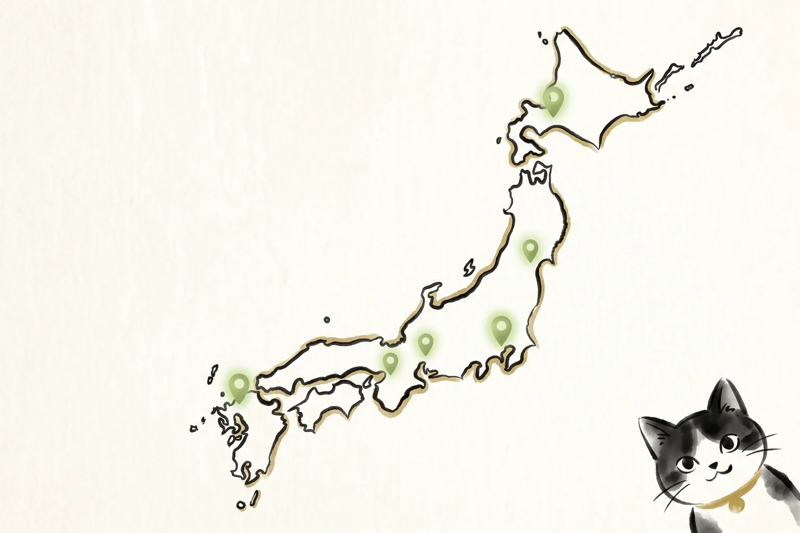

ホーム ＞ 詩吟学習ツール一覧
詩吟学習ツール一覧
詩吟の学習を助ける無料ツールを、開発・公開しています。教室を探したいとき、よい吟を聴きたいとき、漢詩を調べたいとき、自分の吟を分析したいとき。目的に合わせて、気になるツールから使ってみてください。

全国詩吟教室マップ
全国5,000件の詩吟教室を、地域・流派・連絡先から探せます。詩吟を始めたい方、近くの教室を探したい方は、まずこちらをご利用ください。
教室マップを見る →
実力派吟士アーカイブス
YouTubeなどにある実力派吟士の動画を、吟士別・所属別・漢詩別に整理していきます。よい吟をたくさん聴きたい方におすすめです。
アーカイブスを見る →詩吟大辞典
詩吟に関する用語、流派、技巧、歴史、素朴な疑問を調べられる統合辞典です。わからない言葉が出てきたときに役立ちます。
詩吟大辞典を見る →
漢詩辞典
詩吟でよく使われる漢詩について、作者、時代背景、地図、年表、豆知識とともに調べられる辞典です。好きな漢詩を見つける手がかりになります。
漢詩辞典を見る →吟猫コンダクター
詩吟学習をサポートするツールです。詳しい内容は準備が整いしだい、あらためてご案内します。
吟猫コンダクターを見る →吟猫ピッチマップ
録音データを読み込み、音の動きを可視化するツールです。自分の吟の分析や、指導時の説明に使えます。
吟猫ピッチマップを見る →こんな人におすすめ
| こんな方に | おすすめのツール |
|---|---|
| 近くの教室を探したい | 全国詩吟教室マップ |
| よい吟をたくさん聴きたい | 実力派吟士アーカイブス |
| 用語や流派の意味を調べたい | 詩吟大辞典 |
| 漢詩について詳しく知りたい | 漢詩辞典 |
| 日々の学習をサポートしてほしい | 吟猫コンダクター |
| 自分の吟を分析・指導に使いたい | 吟猫ピッチマップ |
ツールの更新情報を受け取りたい方へ
ツールの追加や機能の更新は、これからも少しずつ進めていきます。更新情報をいち早く知りたい方は、初心者向け7日間講座にあわせてご登録ください。ツール更新情報を受け取りたい方向けの案内もご用意しています。
よくある質問
ツールは無料ですか？
はい、基本的に無料で公開予定です。詩吟をより多くの方に楽しんでいただくためのツールなので、気軽にお使いいただけます。今後の運用状況により、内容が変わる可能性はあります。
スマホでも使えますか？
はい、スマートフォンからもご利用いただけるよう作られています。外出先で教室を調べたり、ちょっとした空き時間に漢詩辞典を眺めたりと、気軽にお使いください。
更新情報はどこで知れますか？
ツールの追加や更新情報は、初心者向け7日間講座の登録者向けにお知らせしています。ツール更新情報の受け取りを希望する方は、そちらからご登録ください。
すべてのツールを使う必要がありますか？
いいえ、必要ありません。気になるツールから、気になる順番で使っていただいて大丈夫です。まずは教室マップやアーカイブスなど、目的に近いものから試してみてください。
最終更新日: 2026年7月11日
運営: heyhey｜YouTube「詩吟ちゃんねる」運営・詩吟歴25年以上・2018年全国コンクール優勝